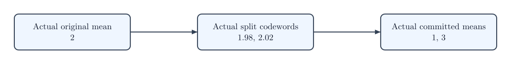
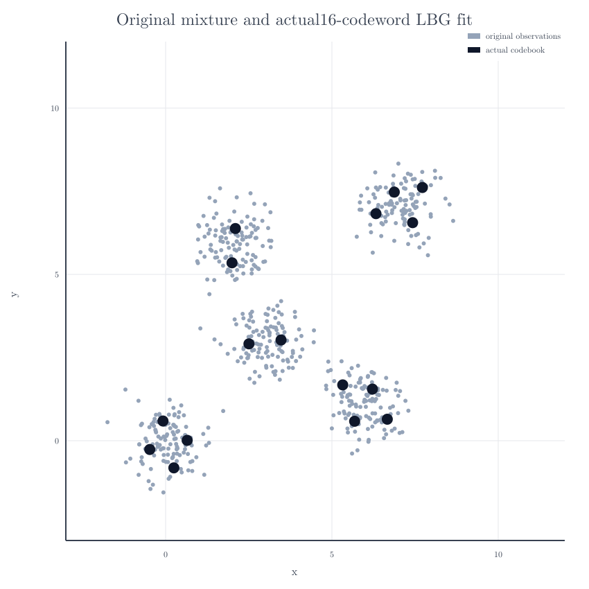
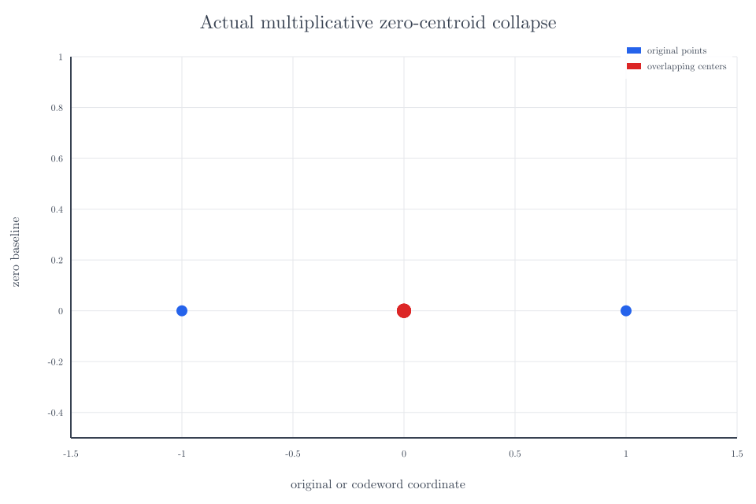
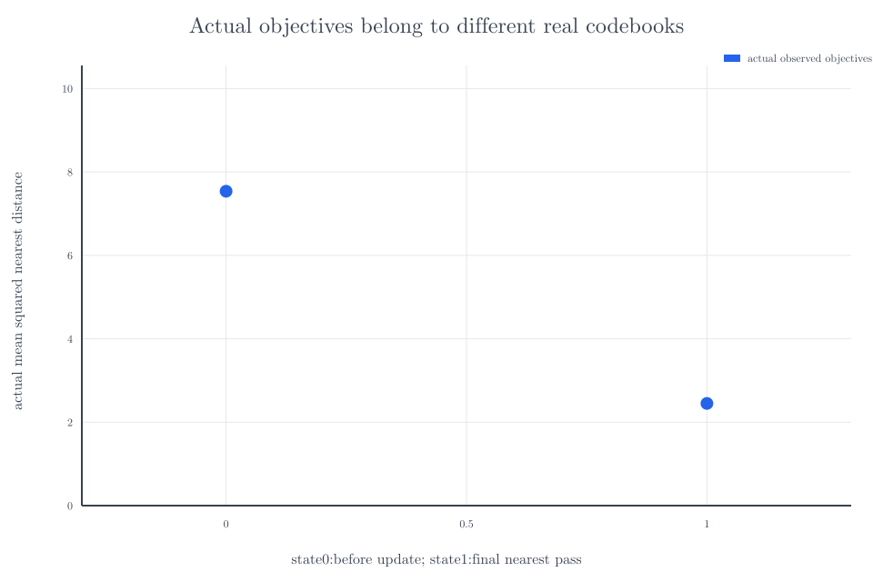

Linde–Buzo–Gray vector quantization
Abstract
A vector quantizer replaces a point by a nearby codeword. LBG grows its codebook by splitting and then alternating nearest assignments with centroid updates. We inspect the actual native stages, retain the original600-point mixture, expose multiplicative zero-centroid collapse and correct the old mismatch between returned centroids and pre-update assignments/distortion. Finite-budget results are local fits, not global-optimal or distinct-center guarantees.
Assignment and centroid steps
For points x_i and codewords c_k, mean squared Euclidean distortion is
For fixed codewords, choosing the nearest label minimizes the pointwise objective. For a nonempty fixed assignment group, differentiating its sum of squared distances gives c_k=mean(group), so the centroid update minimizes that group’s assigned objective. Empty groups retain their old codewords. These two facts explain nonincrease of the Lloyd objective within a fixed codebook size in exact arithmetic; they do not prove a global optimum, across-size monotonicity after perturbation, or a finite-precision stability guarantee.
Start at the global centroid, then split each c into c*(1−epsilon),c*(1+epsilon). The historical loop doubles until size>=request, so a non-power-of-two request rounds up, correcting the old “rounded down” comment. Returned codebooks need not be nested, distinct or fully used. Multiplicative perturbation leaves a zero centroid unchanged.
Tiny actual split and centroid updates
For values1 and3 the initial mean is2. The real multiplicative split gives1.98 and2.02; nearest assignments then update the means to1 and3. The native trace retains actual before codebooks, assignments/counts and committed after codebooks. The diagram reads the first real two-codeword update rather than reconstructing an optimization history.
#include <dm/dm.hpp>
int main() {
std::filesystem::create_directories("build");
auto t = dm::algorithms::linde_buzo_gray_trace({{1}, {3}}, 2);
std::print("| actual stage size | actual completed Lloyd updates | actual final nearest distortion | " "actual tolerance stop |\n| ---: | ---: | ---: | --- |\n");
for (auto &s : t.stages)
std::print("| {} | {} | {} | {} |\n", s.size, s.iterations,
s.distortion, s.tolerance_stop);
auto i =
std::find_if(t.iterations.begin(), t.iterations.end(), [](const auto &e) {
return e.before.size() == 2;
});
std::print("\n| actual point | actual assigned before-codeword |\n| ---: | ---: |\n");
for (std::size_t j = 0; j < i->assignment.size(); ++j)
std::print("| {} | {} |\n", t.data[j][0], i->assignment[j]);
dm::graphics::Diagram d;
d.node("mean", {0, 0},
std::format("Actual original mean\n{}", t.stages[0].final[0][0])).node("split", {6, 0}, std::format("Actual split codewords\n{}, {}", i->before[0][0], i->before[1][0])).node("updated", {12, 0}, std::format("Actual committed means\n{}, {}", i->after[0][0], i->after[1][0])).edge("mean", "split").edge("split", "updated").save_svg("build/lbg_tiny.svg");
}| actual stage size | actual completed Lloyd updates | actual final nearest distortion | actual tolerance stop |
|---|---|---|---|
| 1 | 2 | 1 | true |
| 2 | 3 | 0 | true |
| actual point | actual assigned before-codeword |
|---|---|
| 1 | 0 |
| 3 | 1 |

Original600-point mixture
Retain centers(0,0),(6,1),(2,6),(7,7),(3,3),120 observations per center, mt19937_64 seed12 and independent normal noise with standard deviation0.6 in x then y. The native fixture preserves the original generator order; standard-library normal mappings remain implementation-specific. Request16 codewords, epsilon0.01,100 Lloyd passes per size and relative tolerance1e−8 as before.
One complete native trace contains every real stage and Lloyd update. Stage distortion is now evaluated against that stage’s actual final codebook, making its assignment/history/result mutually consistent. This can differ from the legacy pre-update reported distortion while preserving the ordinary finite split/stopping codebook path. Equal coordinate scales show the original geometry and the actual final16 codewords; no reference class labels are fitted.
#include <dm/dm.hpp>
int main() {
std::filesystem::create_directories("build");
auto data = dm::algorithms::lbg_demo_mixture();
auto t = dm::algorithms::linde_buzo_gray_trace(data, 16, .01, 100, 1e-8);
std::print("| actual codewords | actual Lloyd updates | actual final nearest distortion | actual used " "codewords | actual tolerance stop |\n| ---: | ---: | ---: | ---: | --- |\n");
for (auto &s : t.stages) {
std::vector<bool> used(s.size);
for (auto a : s.assignment)
used[a] = true;
std::print("| {} | {} | {:.12f} | {} | {} |\n", s.size, s.iterations,
s.distortion, std::count(used.begin(), used.end(), true),
s.tolerance_stop);
}
std::print("\nOriginal points {}; actual nearest passes {}; actual point-center distances {}; actual " "coordinate squares {}; actual Lloyd updates {}; actual captured entries {}.\n",
data.size(), t.analysis.work.assignment_passes,
t.analysis.work.distance_evaluations,
t.analysis.work.coordinate_squares,
t.analysis.work.lloyd_iterations, t.captured_entries);
std::vector<double> x, y, cx, cy;
for (auto &p : data) {
x.push_back(p[0]);
y.push_back(p[1]);
}
for (auto &c : t.analysis.result.codebook) {
cx.push_back(c[0]);
cy.push_back(c[1]);
}
auto p = dm::graphics::RPlot::create();
p.points(x, y, "original observations", {148, 163, 184}, 3).points(
cx, cy, "actual codebook", {15, 23, 42}, 8).size(850, 850).margins(
95, 35, 60, 70).x_limits(-3, 12).y_limits(-3, 12).title(
"Original mixture and actual16-codeword LBG fit").x_label("x").y_label(
"y").save_svg("build/lbg_original.svg");
}| actual codewords | actual Lloyd updates | actual final nearest distortion | actual used codewords | actual tolerance stop |
|---|---|---|---|---|
| 1 | 2 | 14.732598361626 | 1 | true |
| 2 | 7 | 7.756479544383 | 2 | true |
| 4 | 15 | 1.649549541316 | 4 | true |
| 8 | 11 | 0.535673932845 | 8 | true |
| 16 | 12 | 0.309939636780 | 16 | true |
Original points 600; actual nearest passes 52; actual point-center distances 232200; actual coordinate squares 464400; actual Lloyd updates 47; actual captured entries 34356.

Multiplicative zero-centroid collapse
The symmetric values−1 and1 have mean0. Every multiplicative child of0 is also0, so this specific initialization never breaks the symmetry. Request3 rounds up to4 identical zero codewords, earliest-index ties assign both points to codeword0 and the remaining codewords are empty. Actual final distortion stays1. This is a concrete failure of this splitting scheme, not evidence that four well-chosen codewords could not quantize two values exactly. The plot shows both original points and the four actual overlapping centers; the printed table retains each duplicate identity.
#include <dm/dm.hpp>
int main() {
std::filesystem::create_directories("build");
auto t = dm::algorithms::linde_buzo_gray_trace({{-1}, {1}}, 3);
std::print("Original requested size {}; actual rounded size {}; actual final distortion {}.\n\n| actual " "codeword identity | actual codeword value | actual assigned point count |\n| ---: | ---: | " "---: |\n",
t.analysis.requested_size, t.analysis.rounded_size,
t.analysis.result.distortion);
std::vector<double> x, y;
for (std::size_t k = 0; k < t.analysis.result.codebook.size(); ++k) {
auto c = t.analysis.result.codebook[k][0];
std::print("| {} | {} | {} |\n", k, c,
std::count(t.analysis.result.assignment.begin(),
t.analysis.result.assignment.end(), k));
x.push_back(c);
y.push_back(0);
}
auto p = dm::graphics::RPlot::create();
p.points({-1, 1}, {0, 0}, "original points", {37, 99, 235}, 7).points(
x, y, "overlapping centers", {220, 38, 38}, 9).x_limits(-1.5, 1.5).y_limits(-.5, 1).title("Actual multiplicative zero-centroid collapse").x_label("original or codeword coordinate").y_label("zero baseline").save_svg("build/lbg_zero.svg");
}Original requested size 3; actual rounded size 4; actual final distortion 1.
| actual codeword identity | actual codeword value | actual assigned point count |
|---|---|---|
| 0 | 0 | 2 |
| 1 | 0 | 0 |
| 2 | 0 | 0 |
| 3 | 0 | 0 |

Final centroids require a final nearest pass
A finite Lloyd budget can end immediately after centroid updates. The old implementation then returned labels and distortion from the preceding codebook, which can disagree with the returned centroids. For data0,5,6,7,8, request2 and a single Lloyd update per size, the real two-codeword update changes centers to2.5 and7. The point5 was assigned to the first pre-update center but is nearer the second returned center. Final nearest distortion is2.45.
The corrected shared producer performs an actual final assignment pass at each size; ordinary and count-only calls perform it too, and its work is counted. The native iteration record deliberately retains its true pre-update labels/objective, while the completed stage/result contains the final consistent labels/objective. This consistency correction does not claim convergence: with one pass, tolerance_stop is false. No report-side reassignment fabricates either history.
#include <dm/dm.hpp>
int main() {
std::filesystem::create_directories("build");
auto t =
dm::algorithms::linde_buzo_gray_trace({{0}, {5}, {6}, {7}, {8}}, 2, .01,
1, 1e-6);
auto &i = t.iterations.back();
auto &s = t.stages.back();
std::print("| actual original point | actual pre-update assignment | actual final nearest assignment " "|\n| ---: | ---: | ---: |\n");
for (std::size_t j = 0; j < t.data.size(); ++j)
std::print("| {} | {} | {} |\n", t.data[j][0], i.assignment[j],
s.assignment[j]);
std::print("\nActual final centers {}, {}; actual pre-update distortion {:.12f}; actual final nearest " "distortion {:.12f}; actual tolerance stop {}.\n",
s.final[0][0], s.final[1][0], i.before_distortion, s.distortion,
s.tolerance_stop);
auto p = dm::graphics::RPlot::create();
p.points({0, 1}, {i.before_distortion, s.distortion},
"actual observed objectives", {37, 99, 235}, 7).x_limits(-.3, 1.3).y_limits(0, std::max(i.before_distortion, s.distortion) * 1.4).title("Actual objectives belong to different real codebooks").x_label("state0:before update; state1:final nearest pass").y_label("actual mean squared nearest distance").save_svg("build/lbg_consistency.svg");
}| actual original point | actual pre-update assignment | actual final nearest assignment |
|---|---|---|
| 0 | 0 | 0 |
| 5 | 0 | 1 |
| 6 | 1 | 1 |
| 7 | 1 | 1 |
| 8 | 1 | 1 |
Actual final centers 2.5, 7; actual pre-update distortion 7.538064000000; actual final nearest distortion 2.450000000000; actual tolerance stop false.

Contracts and verification
Complete nonempty data is rectangular, finite and positive dimensional. Epsilon and tolerance are finite nonnegative; Lloyd budget is positive. Empty data and zero target retain an empty-result no-op after complete input/parameter validation. Non-power-of-two targets round up with checked geometry. Every produced distance, distortion, split coordinate and mean must remain representable; ordinary finite double order is retained, with widened parallel aggregates avoiding some centroid/distortion-sum overflow. No global optimum, fully used/distinct centers or source-independent compression claim is made.
The actual stopping test compares consecutive pre-update distortions after committing the new means; it is strictly previous−current<tol*(previous+1e−12), so tolerance0 can run to the cap at an exact fixed point. Each completed stage receives a real final nearest-codebook pass. Captured iteration labels refer to its before codebook, not its after codebook; stage and result labels refer to their final codebook.
Trace admission counts n*d original coordinates; each actual stage record plus2*k*d codebook coordinates+n final assignments; each actual iteration record plus2*k*d coordinates+n assignments+k counts. Records are admitted before their copies, and a complete trace or exception is returned. Unknown convergence length is not filled with invented events. Default cap is one million actual logical records, zero disables only that optional cap, and scalar fields/row headers/capacities/output/runtime copies/bytes are excluded. Captures own their inputs and real states with no prefix reruns.
Native tests retain the original mixture, verify actual assignment and centroid
updates, check the stale-label correction and zero-centroid collapse, and cover
rounded targets, finite arithmetic, quotas and ownership. The ten-report batch
passed 101 native CTest cases, 34 directly instrumented ASan/UBSan cases, 103
compiled/executed public examples, 515/515 scoped file definitions plus 10 exact
LCG class definitions, and ten representative clangd hovers. Independent Python
integer/Fraction, explicit-label graph search, quadratic sequence DP and full
weighted-stump references passed 69430 records across all ten topics, including
a separately fitted held-out Iris model. Frozen ordinary compatibility passed
1000 Lex-BFS orders, 1000 library sorts, 100 LBG codebooks, 100 complete
five-round LogitBoost ensembles and 200 LLL bases; corrected LBG final
labels/objectives are intentionally excluded from historical compatibility. All
4 complete programs executed and all 4 native figures were rendered and visually
reviewed, with clipped legends corrected and rerun. HTML/Markdown
computed-result and figure-byte checks gate legacy retirement. Repeatable
receipts are retained in build/mepml-conversion/batch-204-213/.
References
Y. Linde, A. Buzo and R. M. Gray(1980), An Algorithm for Vector Quantizer Design, IEEE Transactions on Communications28(1),84–95. This implementation’s multiplicative split, empty-cluster retention, finite pre-update stopping rule and final consistency pass are stated explicitly; they do not imply globally optimal or nested codebooks.